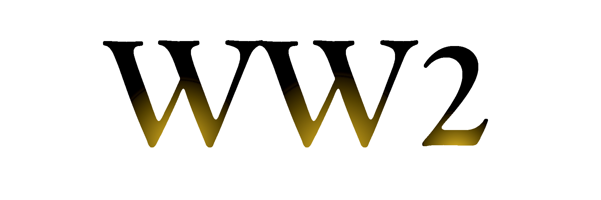
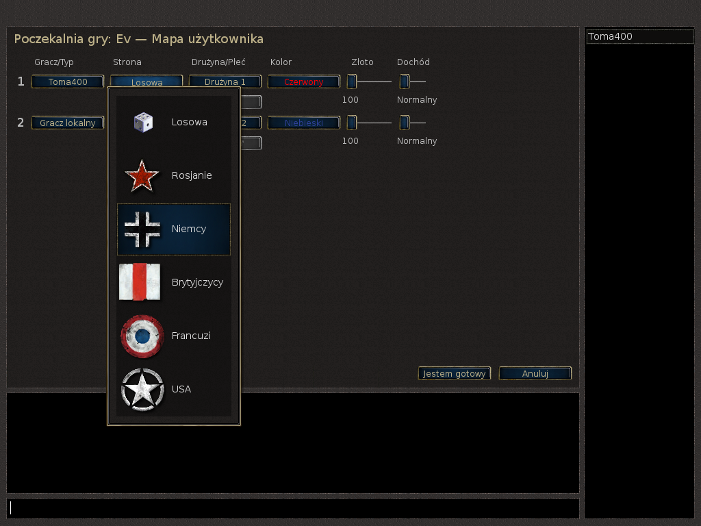
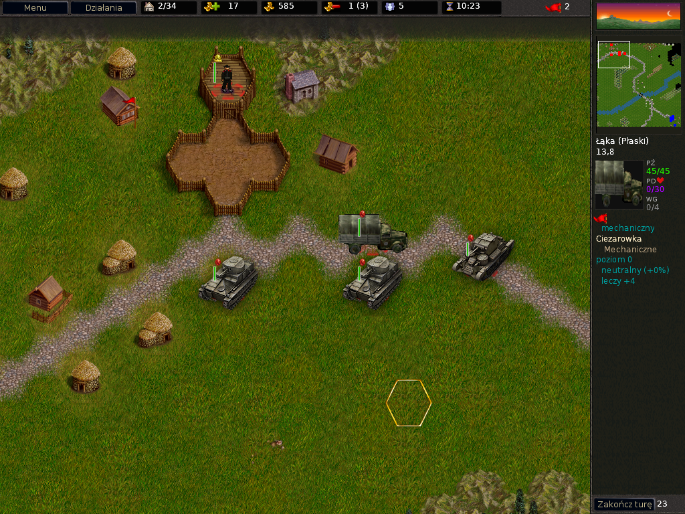

|  |
|
Latest version: 0.9 |

|
WW2 is my first ever mod I was making back in 2012, for Battle of Wesnoth game. It adds several
factions and tons of units related to World War II - or, to be more specific, taken from World of Tanks
franchise. Progress Status
WW2 wasn't touched by me since 2012 or 2013 - its last version was a while ago. I wasn't really keeping
good organisation back then, therefore now it's hard for me to go back and immediately know what to do. Team
|
  |